12 Reinforcement Learning 2
Advanced Machine Learning
Malte Schilling, Neuroinformatics Group, Bielefeld University
Parts of a Reinforcement Learning Problem
An agent is acting in an environment.
The agent can stay in one of many states \(s \in \mathcal{S}\) of the environment, and choose to take one of many actions \(a \in \mathcal{A}\) to switch from one state to another.

Which state the agent will arrive in afterwards is decided by transition probabilities between states \(P\).
Once an action is taken, the environment delivers a reward \(r \in \mathcal{R}\) as feedback. The reward describes how good the agent is doing.
(Weng 2018a)
Overview Lecture
- General Question: Exploration-Exploitation Tradeoff
- Acting in an environment: Multi-Armed Bandit
- Strategies (\(\varepsilon\)-greedy, UCB, …)
- Obtaining Rewards: Markov Reward Process
- Value Function
- Putting everything together: Sequential Decision Making
- Q Function
- Policy
- Markov Decision Process
- Bellman Equation
Explore or Exploit Information for Decision Making

Decision Making: sticking to a good past experience might make you miss out on even better options, but at least you can be confident to get something good.
(Klein and Abbeel 2014)
Exploitation-Exploration Tradeoff
As information of a novel environment is incomplete, we need to gather information for good decisions and want to keep the risk under control.
Exploitation
Taking advantage of the best known option.
Exploration
Take some risk to collect information about unknown options.
An optimal long-term strategy may involve short-term sacrifices, e.g. learning from failure during exploration helps us avoid a certain action.
Examples for Exploitation-Exploration Tradeoff
- Restaurant Selection
- Exploitation: Go to your favourite restaurant
- Exploration: Try a new restaurant
- Oil Drilling
- Exploitation: Drill at the best known location
- Exploration: Drill at a new location
- Game Playing
- Exploitation: Play the move you believe is best
- Exploration: Play an experimental move
(Silver 2015)
Multi-Armed Bandit
Idea: in a casino with multiple slot machines of unknown probabilities.
Which action (slot machine) should you choose for optimal reward?
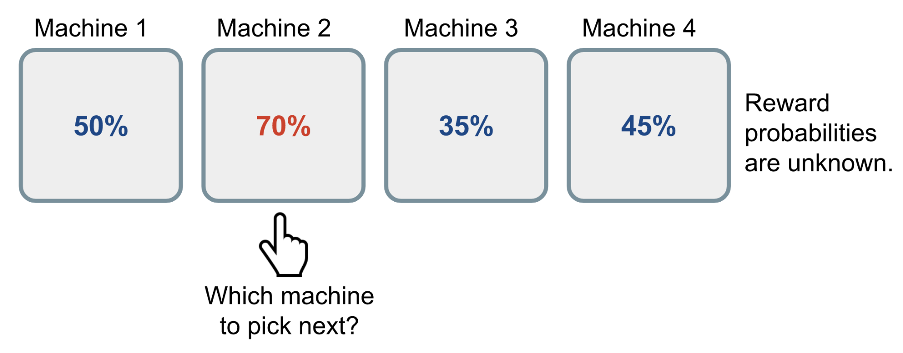
Following a naive approach, one would gather information over a long time to get a true estimate of each of the probabilities. But as a consequence one will spend too much time on suboptimal actions.
(Weng 2018b)
Multi-Armed Bandit
A Bernoulli multi-armed bandit can be described as a tuple of \(\langle \mathcal{A}, \mathcal{R} \rangle\), where:
- \(K\) machines with reward probabilities, \({\theta_1,...,\theta_K}\)
- for each time step \(t\), take an action \(a\) on one slot machine and receive a reward \(r\):
- \(\mathcal{A}\) is a set of actions (one for each slot machine) – the value of action \(a\) is the expected reward \(Q(a) = \mathbb{E} [r \vert a] = \theta\) (when at time \(t\) action \(a_t\) is choosing the \(i\)-th machine \(Q(a_t)=\theta_i\)).
- \(\mathcal{R}\) is the reward function. For a Bernoulli bandit,we observe a reward in a stochastic fashion (\(r_t= \mathcal{R}(a_t)\) may return 1 with probability \(Q(a_t)\)).
This is a simplified version of a Markov decision process (there is no state \(\mathcal{S}\)).
(Weng 2018b)
Maximization of cumulative reward
Goal is to maximize cumulative reward \(\sum_{t=1}^T r_t\) (the return \(G\)).
The optimal action produces the maximal reward. Deviating from that action leads to a potential loss or regret.
The probability for the optimal reward \(\theta^*\) of the optimal action \(a^*\) is \[\theta^{*}=Q(a^{*})=\max_{a \in \mathcal{A}} Q(a) = \max_{1 \leq i \leq K} \theta_i\]
The loss function is the total regret for not selecting the optimal action up to the time step \(T\) \[\mathcal{L}_T = \mathbb{E} \Big[ \sum_{t=1}^T \big( \theta^{*} - Q(a_t) \big) \Big]\]
(Weng 2018b)
An example bandit problem
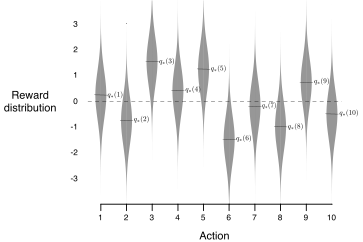
Random action values \(q_*(a), a=1,...,10\) (selected from a normal distribution, zero mean, unit std. dev.).
(Sutton and Barto 2018)
\(\varepsilon\)-Greedy Strategy
- Take the best action most of the time: \(\hat{a}^{*}_t = \arg\max_{a \in \mathcal{A}} \hat{Q}_t(a)\)
- But with \(p=\varepsilon\) do random exploration.
Best action is estimated from the collected action values from past experience (averaging the rewards for that action): \[ \hat{Q}_t(a) = \frac{1}{N_t(a)} \sum_{\tau=1}^t r_\tau \mathbb{1}[a_\tau = a] \]
\(\mathbb{1}\) – binary indicator function for selecting an action
\(N_t(a) = \sum_{\tau=1}^t \mathbb{1}[a_\tau = a]\) – counting how many times an action was selected
(Weng 2018b)
Performance of \(\varepsilon\)-Greedy Strategy
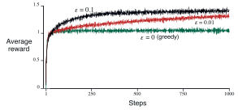
Average performance of \(\varepsilon\)-greedy method (averaged over 2000 runs) for 10-arm bandit problem.
(Sutton and Barto 2018)
Adaptation of \(\varepsilon\)-Greedy Strategy
Drawback of \(\varepsilon\)-Greedy Strategy:
- during exploration we are randomly selecting actions — even though we might already have established bad actions
Possible Solutions
- decrease \(\varepsilon\) over time
- keep track of actions – of an estimate of how uncertain we are about this action (addressing the exploitation-exploration tradeoff)
Upper Confidence Bounds (UCB)
Idea: favor exploration of actions that still have a strong potential to have an optimal value.
This potential is measured as an upper confidence bound of the reward value \(\hat{U}_t(a)\). It depends on how often we have tried an action (\(N_t(a)\)).
Therefore, the true reward value is bound to:
\[Q(a) \leq \hat{Q}_t(a) + \hat{U}_t(a)\]
In UCB algorithm, actions are selected greedily in order to maximize the upper confidence bound: \[a^{UCB}_t = argmax_{a \in \mathcal{A}} \hat{Q}_t(a) + \hat{U}_t(a) = argmax_{a \in \mathcal{A}} \hat{Q}_t(a) + c \sqrt{\frac{\ln t}{N_t(a)}} \]
(Weng 2018b)
Average Performance of UCB
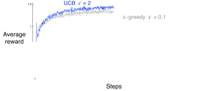
Average performance of UCB (averaged over 2000 runs) for 10-arm bandit problem.
UCB outperforms \(\varepsilon\)-greedy.
(Sutton and Barto 2018)
Further variations for Solving Bandit Problems
- employing an optimistic estimate of the action value instead of a default initialization
- Bayesian UCB: introduce a prior assumption for the reward distribution – as a Gaussian – and use confidence intervals
- Thompson Sampling – formulate action selection as a probabilistic process itself (selecting an action with a probability that estimates it is optimal)
For further explanation see (Sutton and Barto 2018) or (Weng 2018b).
Sequential Decision Making
The interaction between agent and environment is a sequence of actions and returned observations plus rewards.
Goal of the agent: select actions to maximise total future reward
- But actions may have long term consequences and reward may be delayed.
- It may be better to sacrifice immediate reward to gain more long-term reward
An agent’s policy \(\pi(s) = a\) describes which action \(a\) an agent selects depending on the current state.
For the stochastic state, a policy is a probability distribution over actions: \(\pi(a \vert s) = \mathbb{P}_\pi [A=a \vert S=s]\).
(Silver 2015)
Reinforcement Learning as Sequential Decision Making

Agent-environment interaction in a Markov-Decision Process.
(Sutton and Barto 2018)
A Markov Reward Process
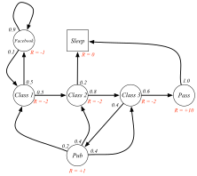
Before turning to action, we focus on a simpler class of Markov Chains: the Markov Reward Process. We could sample trajectories from it.
(Silver 2015)
Markov Process
A Markov process is a memoryless random process – a sequence of random states \(S_1, S_2, ...\) with the Markov property.
Markov Property
A state \(S_t\) is Markov iff \(P(S_{t+1} | S_t) = P(S_{t+1} | S_1,...,S_t)\)
States captures all relevant information from the history (“The future is independent of the past given the present”).
Markov Process (Markov Chain)
- \(\mathcal{S}\) is a (finite) set of states
- \(\mathcal{P}\) is a state transition probability matrix: \(P_{ss'} =P(S_{t+1}=s'|S_t=s)\)
Markov Reward Process
A Markov reward process is a Markov Chain with associated reward values.
- \(\mathcal{S}\) is a (finite) set of states
- \(\mathcal{P}\) is a state transition probability matrix: \(P_{ss'} =P(S_{t+1}=s'|S_t=s)\)
- \(\mathcal{R}\) is a reward function, \(\mathcal{R}_s = \mathbb{E}[R_{t+1}|S_t=s]\)
- \(\gamma\) is a discount factor, \(\gamma \in [0,1]\)
Value Function
A Value Function measures the estimated goodness of a state, i.e. how rewarding a state is by a prediction of the cumulative future reward.
Return
cumulative future reward is a total sum of discounted rewards going forward, starting from time \(t\):
\[ G_t = R_{t+1} + \gamma R_{t+2} + \dots = \sum_{k=0}^{\infty} \gamma^k R_{t+k+1} \]
As future rewards are usually more uncertain, they are weighted less through the discount factor \(\gamma \in [0, 1]\).
(Weng 2018a)
Discouting of reward
Most Markov reward and decision processes are discounted. Why?
- Mathematically convenient to discount rewards
- Avoids infinite returns in cyclic Markov processes
- Uncertainty about the future may not be fully represented
- Animal/human behaviour shows preference for immediate reward
- It can be possible to use undiscounted Markov reward processes for terminating sequences.
(Silver 2015)
State-Value Function
The state-value function of a state \(s\) is the expected return if we are in this state at time \(t, S_t=s\):
\[V_{\pi}(s) = \mathbb{E}_{\pi}[G_t \vert S_t = s]\]
- Used to evaluate the goodness/badness of states,
- and therefore to select between actions.
(Weng 2018a)
Sampling in the student example
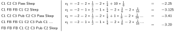
(Silver 2015)
Convergence of the value function
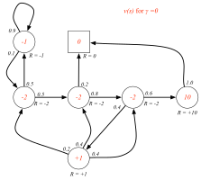
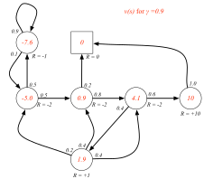
(Silver 2015)
Bellman Equation
The value function can be decomposed into two parts:
- immediate reward \(R_{t+1}\)
- discounted reward from this point forward for the next reached state – which is estimated by the state-value function: \(�v(S_{t+1})\)
\[\begin{align*} V(s) &= \mathbb{E}[G_t \vert S_t = s] \\ &= \mathbb{E} [R_{t+1} + \gamma R_{t+2} + \gamma^2 R_{t+3} + \dots \vert S_t = s] \\ &= \mathbb{E} [R_{t+1} + \gamma (R_{t+2} + \gamma R_{t+3} + \dots) \vert S_t = s] \\ &= \mathbb{E} [R_{t+1} + \gamma G_{t+1} \vert S_t = s] \\ &= \mathbb{E} [R_{t+1} + \gamma V(S_{t+1}) \vert S_t = s] \end{align*}\]
Example of a Sequential Decision Problem

This is a Markov Decision Process – in addition, actions are selected.
(Weng 2018a)
Markov Decision Process
Markov decision processes formally describe an environment for reinforcement learning.
The environment is fully observable — a current state completely characterises the process.
Almost all RL problems can be formalised as MDPs
- Optimal control primarily deals with continuous MDPs
- Partially observable problems can be converted into MDPs
- Bandits are MDPs with one state
(Silver 2015)
Markov Decision Process
… is given by five elements:
- a set of states \(\mathcal{S}\)
- a set of actions \(\mathcal{A}\)
- a transition probability function \(\mathcal{P}\)
- a reward function \(\mathcal{R}\)
- the discount factor \(\gamma\)
Maximizing of total Reward as a Goal
Goal is maximizing cummulative reward in the long run.
Reward Hypothesis
That all of what we mean by goals and purposes can be well thought of as the maximization of the expected value of the cumulative sum of a received scalar signal (called reward). The use of a reward signal to formalize the idea of a goal is one of the most distinctive features of reinforcement learning.
The reward signal tells an agent what you want it to achieve, not how you want it achieved.
(Sutton and Barto 2018)
Q-Function
The action-value function (“Q-value”) of a state-action pair is defined as:
\[Q_{\pi}(s, a) = \mathbb{E}_{\pi}[G_t \vert S_t = s, A_t = a]\]
When following a target policy \(\pi\), we can integrate over the probility distribution of possible actions which again leads to the state-value function:
\[V_{\pi}(s) = \sum_{a \in \mathcal{A}} Q_{\pi}(s, a) \pi(a \vert s)\]
Advantage Function
The difference between action-value and state-value is the action advantage function
\[A_{\pi}(s, a) = Q_{\pi}(s, a) - V_{\pi}(s)\]
(Weng 2018a)
Example Cartpole
Training data consists of sequences of situations, actions and an associated reward.
- The task is to learn an (optimal) control strategy that maximizes the reward.
- There is no teacher — only a reward measure.
- There is a tradeoff between exploration and exploitation.

Maze Example: Policy
Task
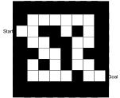
- Reward of \(-1\) per time step in maze
- Actions are move N, S, W, E
- State is location
Policy Representation
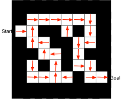
Arrows represent policy \(\pi(s)\) for all the states.
(Sutton and Barto 2018)
Maze Example: Value Function
Task
- Reward of \(-1\) per time step in maze
- Actions are move N, S, W, E
- State is location
State Value
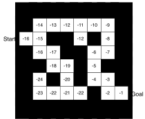
Shown are values \(v_{\pi}(s)\) for the different states.
(Sutton and Barto 2018)
A Gridworld: Value-function for a Random Policy
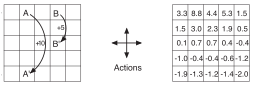
Each location is a state.
Actions: North, West, South, East
Reward: \(-1\) when trying to move out of the grid, \(0\) otherwise
For state \(A\) and \(B\): all actions lead to \(A'\) and a reward of \(+10\) (respectively \(B', +5\)).
(Sutton and Barto 2018)
Optimal Value Function and Policy
The goal in RL is to act optimally – this is possible through learning an optimal value function or directly an optimal policy.
The optimal value function produces the maximum return:
\[ V_{*}(s) = \max_{\pi} V_{\pi}(s), Q_{*}(s, a) = \max_{\pi} Q_{\pi}(s, a)\]
The optimal policy achieves optimal value functions:
\[ \pi_{*} = \arg\max_{\pi} V_{\pi}(s), \pi_{*} = \arg\max_{\pi} Q_{\pi}(s, a)\]
These are directly related as \[ V_{\pi_{*}}(s)=V_{*}(s), Q_{\pi_{*}}(s, a) = Q_{*}(s, a)\]
(Weng 2018a)
Optimal Solution for the Gridworld Example

Each location is a state. Discount factor is \(0.9\).
Actions: North, West, South, East
Reward: \(-1\) when trying to move out of the grid, \(0\) otherwise
For state \(A\) and \(B\): all actions lead to \(A'\) and a reward of \(+10\) (respectively \(B', +5\)).
(Sutton and Barto 2018)
References
Klein, Dan, and Pieter Abbeel. 2014. “UC Berkeley Cs188 Intro to Ai.” http://www0.cs.ucl.ac.uk/staff/d.silver/web/Teaching.html.
Silver, David. 2015. “UCL Course on Rl Ucl Course on Rl Ucl Course on Reinforcement Learning.” http://www0.cs.ucl.ac.uk/staff/d.silver/web/Teaching.html.
Sutton, Richard S., and Andrew G. Barto. 2018. Reinforcement Learning: An Introduction. Second. The MIT Press.
Weng, Lilian. 2018a. “A (Long) Peek into Reinforcement Learning.” 2018. https://lilianweng.github.io/lil-log/2018/02/19/a-long-peek-into-reinforcement-learning.html.
———. 2018b. “The Multi-Armed Bandit Problem and Its Solutions.” 2018. The Multi-Armed Bandit Problem and Its Solutions.